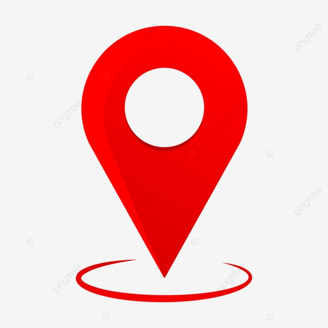

ALAN PATRICK
PERFIL
Desde de criança sempre fui "curioso" quanto a tecnologia, sempre fusei, e busquei aprender ao máximo, tinha bastante curiosidade, foi uma paixão que poucos foi de fato descobrindo, aos 15 anos fiz um curso técnico de informática onde tive primeiro contato com um pouco de programação que logo chamou minha atenção. Depois do curso técnico tive um caminho a seguir e dali em diante busquei curso superior na área, pois tinha descoberto minha vocação, entrei no curso de graduação de TI consegui me informar e realizar o meu sonho de se tornar programador
Principais competências
- linguagem C
- linguagem C++
- linguagem java
- linguagem python
Formação acadêmica
guaduado em tecnologia da informação na universidade federal do rio grande do norte(UFRN) em 2014 e mestrando em tecnologia da informação na universidade federal do seminário (Ufersa) em 2015.
Esperiencias profissionais
-
Microsoft office 2016-2018:
- Desenvolver Java
- banco de dados
-
google 2018-2020
- linguagem python
- desenvolvedor front-end
- desenvolvedor back-end
Contato
-  Av joão cordero filho
-
 99887766
99887766
- alanpatrick@gmail.com